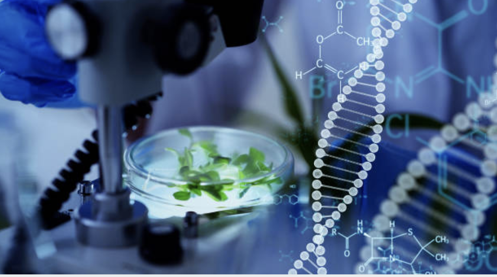
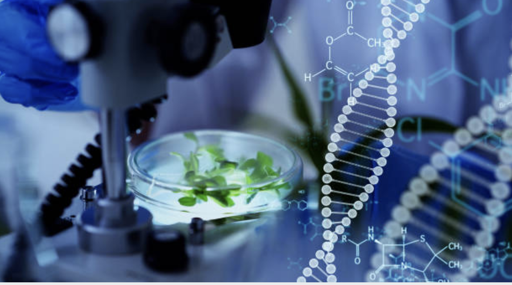

Crop Recommendations
Get personalized recommendations for crop selection based on soil, climate, and market demand.

Yield Predictions
Estimate the potential yield for recommended crops using our advanced prediction models.
 

Data-driven Insights
Access valuable insights and analytics based on historical data and real-time information.